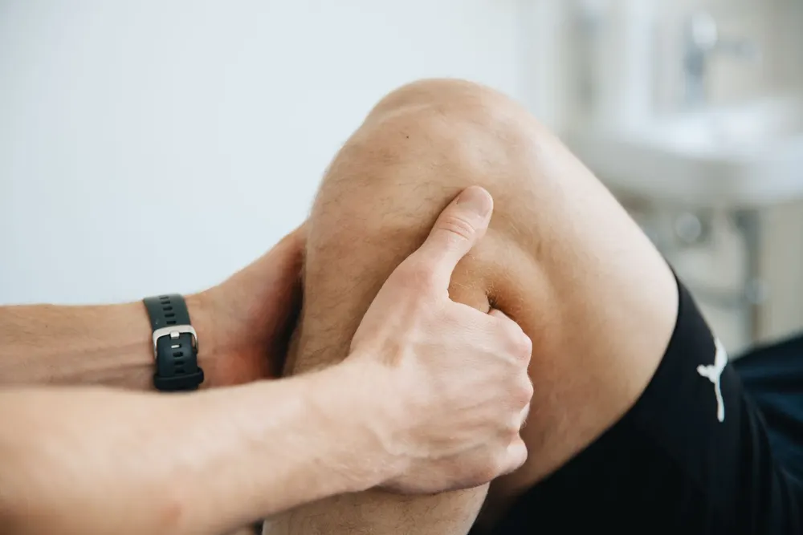
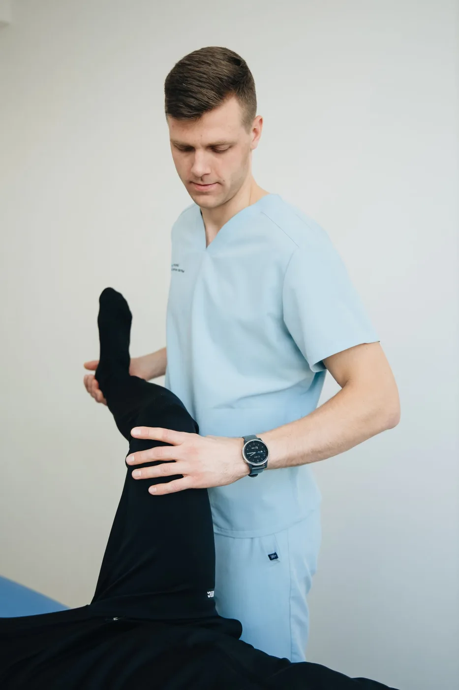
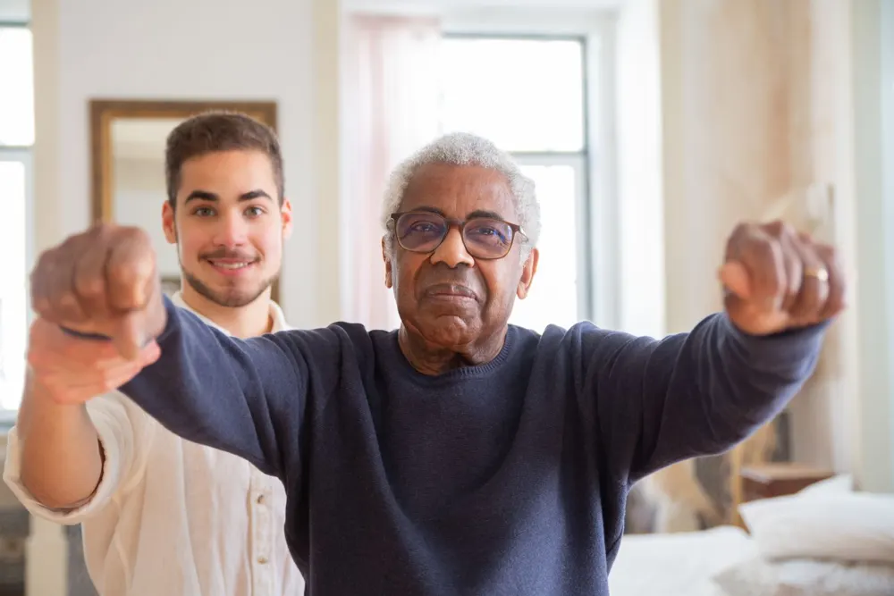
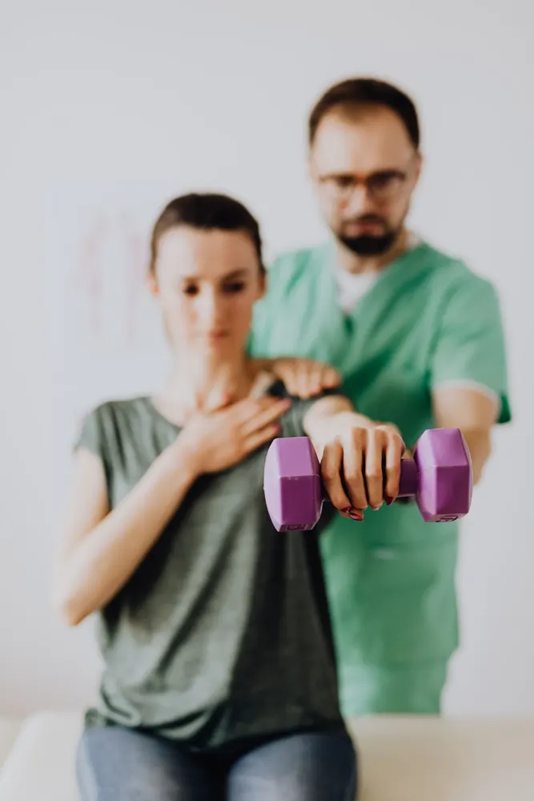
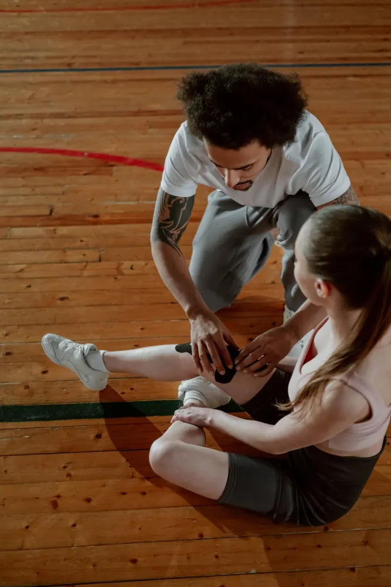
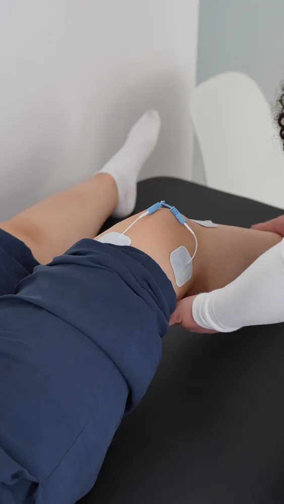
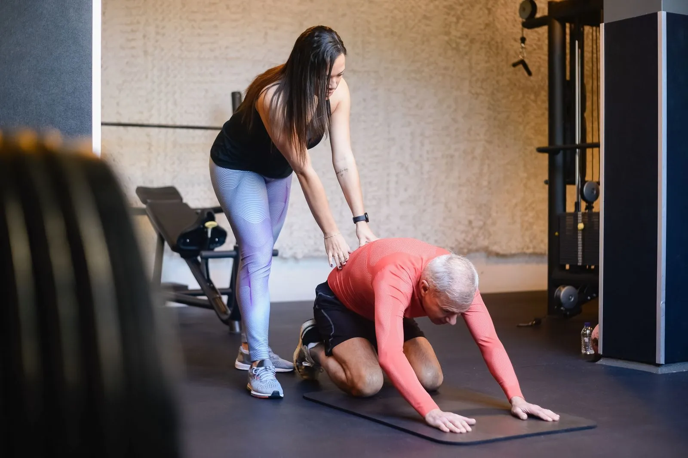

01Dolor muscular y articular
Tratamiento de dolor de espalda, cuello, hombros y articulaciones. Terapia manual y ejercicio terapéutico para aliviar el dolor desde su origen, no solo el síntoma.
Agendar valoraciónTerapia física profesional y personalizada para recuperar tu movilidad, aliviar el dolor y devolverte la confianza en tu cuerpo. Cada plan de tratamiento se diseña a tu medida.

Cinco áreas de atención con un mismo objetivo: que recuperés tu calidad de vida con un tratamiento seguro, progresivo y a tu ritmo.

01Tratamiento de dolor de espalda, cuello, hombros y articulaciones. Terapia manual y ejercicio terapéutico para aliviar el dolor desde su origen, no solo el síntoma.
Agendar valoración
02Programas de movilidad, equilibrio y fortalecimiento para mantener la independencia y prevenir caídas. Atención paciente, cercana y adaptada a cada etapa.
Agendar valoración
03Rehabilitación tras eventos cerebrovasculares y otras condiciones neurológicas. Trabajamos coordinación, fuerza y funcionalidad para recuperar autonomía.
Agendar valoración
04Esguinces, desgarros y lesiones por sobrecarga. Recuperación progresiva y readaptación al deporte para que volvés a entrenar con seguridad.
Agendar valoración
05Preparación física antes de una cirugía y rehabilitación después de ella. Acortá tiempos de recuperación y retomá tus actividades con confianza.
Agendar valoraciónCreemos que el movimiento es salud. Por eso acompañamos a cada paciente con un tratamiento basado en evidencia, trato humano y seguimiento real, desde la primera valoración hasta el alta.
Nuestra clínica en Tibás está equipada para atender desde dolores crónicos hasta rehabilitación deportiva y neurológica, siempre con planes diseñados para tu caso específico.

Un proceso claro desde el primer día, para que siempre sepás dónde estás y hacia dónde vamos.
Evaluamos tu condición, historial y objetivos. Salís de la primera sesión sabiendo qué tenés y cómo lo vamos a tratar.
Diseñamos un plan de tratamiento a tu medida, con metas concretas y tiempos estimados de recuperación.
Sesiones de terapia manual y ejercicio terapéutico, con progresión controlada según tu evolución.
Medimos avances en cada etapa y te damos herramientas para mantener los resultados después del alta.
Fácil de llegar: justo frente a COOPESAIN R.L., con acceso a transporte público y comercios cercanos.
Estas son las consultas más comunes. Si la tuya no aparece, escribinos por WhatsApp y te la respondemos al momento.
Hacer una consultaCompletá el formulario y tu solicitud nos llega directo por WhatsApp. Te respondemos para confirmar la fecha y hora de tu cita.